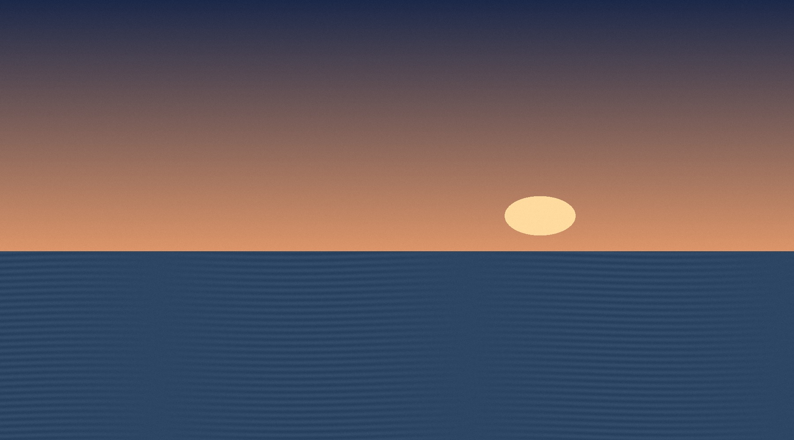

街が静まるころ、物語がはじまる。秋の小さな上映室 / 2026
風景の記録 / 94分
波の眠る場所
誰もいない海辺で、一人の録音技師が失われた音を探す。
監督：水野 透 / 架空作品
上映日
上映開始19:20終映 20:54
少しだけ、
日常を遠くへ。
日常を遠くへ。
開場は上映の20分前。
画面の座席選択はプレビューです。
上映プログラム
今夜、どこへ行こう。
10/30「波の眠る場所」19:20の回を表示しています。